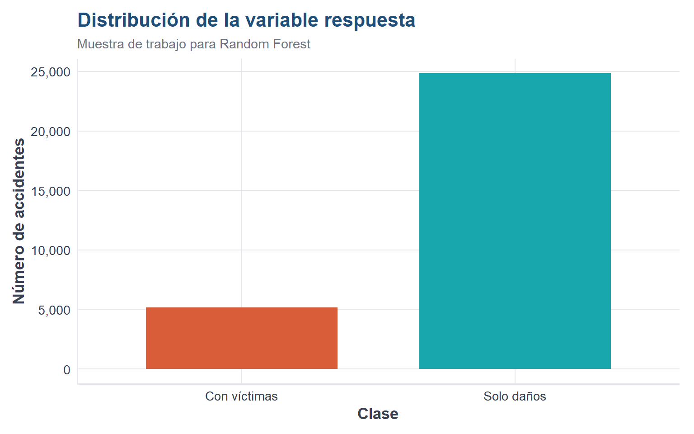
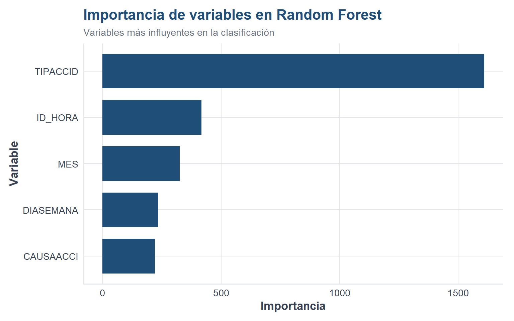
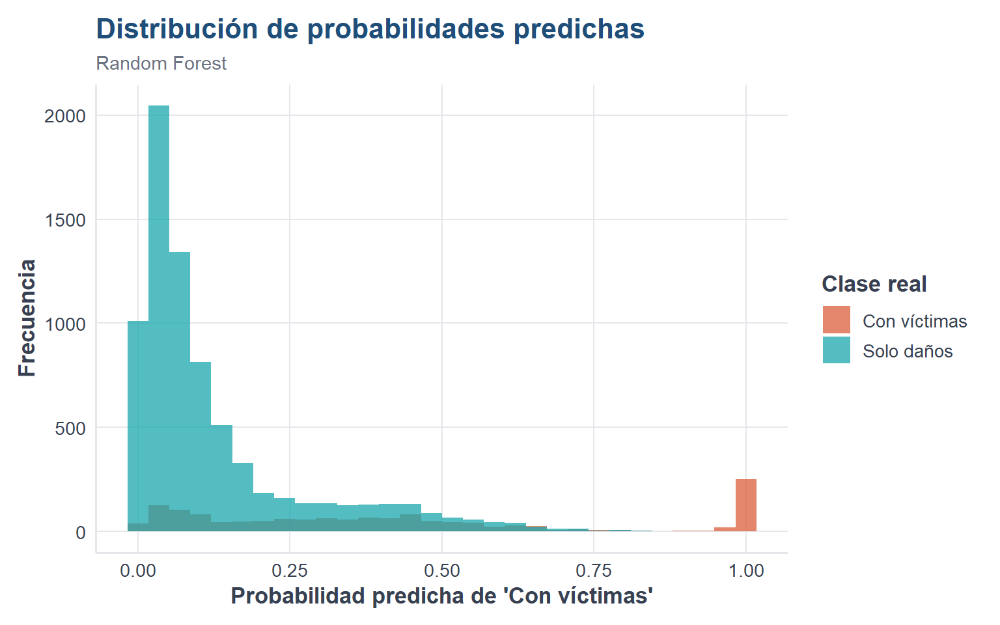

Código
library(readr)
library(dplyr)
library(ggplot2)
library(ranger)
source("util_graficas.R")
ruta_atus_ml <- "datos/atus_ml_preparado.csv"
file.exists(ruta_atus_ml)[1] TRUEAl finalizar este capítulo, el lector será capaz de explicar la idea básica de Random Forest, comprender por qué combinar muchos árboles mejora la clasificación, entrenar un modelo en R, interpretar importancia de variables, generar predicciones y evaluar el modelo.
En el capítulo anterior estudiamos árboles de decisión. Aunque son fáciles de interpretar, un solo árbol puede ser inestable: pequeños cambios en los datos pueden producir un árbol distinto.
Random Forest resuelve este problema combinando muchos árboles de decisión. Cada árbol aprende sobre una muestra aleatoria de los datos y usando subconjuntos aleatorios de variables. Después, las predicciones individuales se combinan.
En clasificación, la idea es que la clase final se determina por votación mayoritaria entre los árboles.
Podemos pensar en Random Forest como un comité de expertos.
Supongamos que construimos (B) árboles. Si el árbol (b) predice una clase (^{(b)}(x)) para la observación (x), la predicción final del bosque es:
\[ \hat{y}(x) = \text{moda}\{\hat{y}^{(1)}(x), \hat{y}^{(2)}(x), \ldots, \hat{y}^{(B)}(x)\} \]
Si queremos una probabilidad estimada para la clase “Con víctimas”, podemos usar la proporción de árboles que votan por esa clase:
\[ \hat{p}(x) = \frac{1}{B} \sum_{b=1}^{B} I(\hat{y}^{(b)}(x)=1) \]
Random Forest introduce dos fuentes de aleatoriedad:
Esto hace que los árboles sean distintos entre sí. Al combinar muchos árboles, el modelo final suele generalizar mejor.
Entrada:
- Base de datos con variables predictoras.
- Variable respuesta categórica.
- Número de árboles B.
- Número de variables candidatas por división mtry.
Proceso:
1. Tomar una muestra bootstrap de los datos.
2. Construir un árbol de decisión.
3. En cada división, considerar solo un subconjunto aleatorio de variables.
4. Repetir el proceso para construir muchos árboles.
5. Combinar las predicciones por votación mayoritaria.
6. Evaluar el modelo en datos de prueba.library(readr)
library(dplyr)
library(ggplot2)
library(ranger)
source("util_graficas.R")
ruta_atus_ml <- "datos/atus_ml_preparado.csv"
file.exists(ruta_atus_ml)[1] TRUEif (file.exists(ruta_atus_ml)) {
atus_ml <- read_csv(ruta_atus_ml, show_col_types = FALSE)
print("Base preparada cargada correctamente.")
} else {
atus_ml <- NULL
print("No se encontró el archivo datos/atus_ml_preparado.csv. Ejecuta primero el capítulo 2.")
}[1] "Base preparada cargada correctamente."Random Forest puede entrenarse con bases grandes, pero para que el libro sea reproducible y rápido de generar en HTML y PDF, trabajaremos con una muestra amplia y controlada.
if (!is.null(atus_ml)) {
set.seed(123)
tamano_muestra <- min(30000, nrow(atus_ml))
atus_rf_base <- atus_ml |>
sample_n(tamano_muestra)
data.frame(
filas = nrow(atus_rf_base),
columnas = ncol(atus_rf_base)
)
} filas columnas
1 30000 6if (exists("atus_rf_base")) {
atus_rf_base <- atus_rf_base |>
mutate(
accidente_con_victimas = factor(
accidente_con_victimas,
levels = c("Con víctimas", "Solo daños")
),
MES = as.factor(MES),
ID_HORA = as.numeric(ID_HORA),
DIASEMANA = as.factor(DIASEMANA),
TIPACCID = as.factor(TIPACCID),
CAUSAACCI = as.factor(CAUSAACCI)
) |>
na.omit()
str(atus_rf_base)
}tibble [30,000 × 6] (S3: tbl_df/tbl/data.frame)
$ accidente_con_victimas: Factor w/ 2 levels "Con víctimas",..: 2 1 2 2 2 2 2 2 1 2 ...
$ MES : Factor w/ 12 levels "01","02","03",..: 8 8 2 6 3 9 12 2 5 3 ...
$ ID_HORA : num [1:30000] 17 12 19 15 17 18 4 23 20 19 ...
$ DIASEMANA : Factor w/ 7 levels "Domingo","Jueves",..: 4 4 1 6 2 1 1 5 1 6 ...
$ TIPACCID : Factor w/ 13 levels "Caída de pasajero",..: 9 8 9 6 6 7 9 6 4 9 ...
$ CAUSAACCI : Factor w/ 6 levels "Certificado cero",..: 2 2 2 2 2 2 2 2 2 2 ...if (exists("atus_rf_base")) {
tabla_clases_rf <- table(atus_rf_base$accidente_con_victimas)
tabla_clases_rf
}
Con víctimas Solo daños
5168 24832 if (exists("tabla_clases_rf")) {
round(100 * prop.table(tabla_clases_rf), 2)
}
Con víctimas Solo daños
17.23 82.77 if (exists("atus_rf_base")) {
ggplot(atus_rf_base, aes(x = accidente_con_victimas, fill = accidente_con_victimas)) +
geom_bar(width = 0.7) +
escala_clases_fill() +
scale_y_continuous(labels = etiqueta_numero) +
labs(
title = "Distribución de la variable respuesta",
subtitle = "Muestra de trabajo para Random Forest",
x = "Clase",
y = "Número de accidentes",
fill = "Clase"
) +
tema_libro() +
theme(legend.position = "none")
}
if (exists("atus_rf_base")) {
set.seed(123)
n <- nrow(atus_rf_base)
indices_entrenamiento <- sample(1:n, size = round(0.7 * n))
entrenamiento <- atus_rf_base[indices_entrenamiento, ]
prueba <- atus_rf_base[-indices_entrenamiento, ]
data.frame(
conjunto = c("Entrenamiento", "Prueba"),
registros = c(nrow(entrenamiento), nrow(prueba)),
porcentaje = c(
round(100 * nrow(entrenamiento) / nrow(atus_rf_base), 2),
round(100 * nrow(prueba) / nrow(atus_rf_base), 2)
)
)
} conjunto registros porcentaje
1 Entrenamiento 21000 70
2 Prueba 9000 30if (exists("entrenamiento")) {
set.seed(123)
modelo_rf <- ranger(
formula = accidente_con_victimas ~ MES + ID_HORA + DIASEMANA + TIPACCID + CAUSAACCI,
data = entrenamiento,
num.trees = 200,
mtry = 3,
min.node.size = 20,
importance = "impurity",
probability = TRUE,
classification = TRUE,
seed = 123
)
}if (exists("modelo_rf")) {
modelo_rf
}Ranger result
Call:
ranger(formula = accidente_con_victimas ~ MES + ID_HORA + DIASEMANA + TIPACCID + CAUSAACCI, data = entrenamiento, num.trees = 200, mtry = 3, min.node.size = 20, importance = "impurity", probability = TRUE, classification = TRUE, seed = 123)
Type: Probability estimation
Number of trees: 200
Sample size: 21000
Number of independent variables: 5
Mtry: 3
Target node size: 20
Variable importance mode: impurity
Splitrule: gini
OOB prediction error (Brier s.): 0.1066668 if (exists("modelo_rf")) {
importancia_rf <- data.frame(
variable = names(modelo_rf$variable.importance),
importancia = as.numeric(modelo_rf$variable.importance)
) |>
arrange(desc(importancia))
importancia_rf
} variable importancia
1 TIPACCID 1608.8347
2 ID_HORA 416.7870
3 MES 324.9780
4 DIASEMANA 234.4944
5 CAUSAACCI 220.5923if (exists("importancia_rf")) {
importancia_top <- importancia_rf |>
slice_head(n = 10)
ggplot(importancia_top, aes(x = reorder(variable, importancia), y = importancia)) +
geom_col(fill = col_azul, width = 0.75) +
coord_flip() +
labs(
title = "Importancia de variables en Random Forest",
subtitle = "Variables más influyentes en la clasificación",
x = "Variable",
y = "Importancia"
) +
tema_libro()
}
if (exists("modelo_rf") && exists("prueba")) {
predicciones_rf <- predict(modelo_rf, data = prueba)
probabilidades_rf <- predicciones_rf$predictions[, "Con víctimas"]
clases_rf <- colnames(predicciones_rf$predictions)[
max.col(predicciones_rf$predictions, ties.method = "first")
]
clases_rf <- factor(clases_rf, levels = c("Con víctimas", "Solo daños"))
head(data.frame(
real = prueba$accidente_con_victimas,
probabilidad_con_victimas = probabilidades_rf,
clase_predicha = clases_rf
))
} real probabilidad_con_victimas clase_predicha
1 Solo daños 0.04273607 Solo daños
2 Solo daños 0.11542958 Solo daños
3 Solo daños 0.44741621 Solo daños
4 Solo daños 0.07628208 Solo daños
5 Solo daños 0.07690148 Solo daños
6 Solo daños 0.18326694 Solo dañosif (exists("clases_rf")) {
real_rf <- factor(prueba$accidente_con_victimas, levels = c("Con víctimas", "Solo daños"))
matriz_confusion_rf <- table(
Real = real_rf,
Predicho = clases_rf
)
matriz_confusion_rf
} Predicho
Real Con víctimas Solo daños
Con víctimas 475 991
Solo daños 265 7269calcular_metricas_rf <- function(real, predicho) {
real <- factor(real, levels = c("Con víctimas", "Solo daños"))
predicho <- factor(predicho, levels = c("Con víctimas", "Solo daños"))
matriz <- table(Real = real, Predicho = predicho)
VP <- matriz["Con víctimas", "Con víctimas"]
FN <- matriz["Con víctimas", "Solo daños"]
FP <- matriz["Solo daños", "Con víctimas"]
VN <- matriz["Solo daños", "Solo daños"]
data.frame(
exactitud = (VP + VN) / (VP + FN + FP + VN),
sensibilidad = VP / (VP + FN),
especificidad = VN / (VN + FP)
)
}
if (exists("real_rf") && exists("clases_rf")) {
metricas_rf <- calcular_metricas_rf(real_rf, clases_rf)
metricas_rf
} exactitud sensibilidad especificidad
1 0.8604444 0.3240109 0.9648261if (exists("probabilidades_rf")) {
datos_prob_rf <- data.frame(
probabilidad = probabilidades_rf,
clase_real = real_rf
)
ggplot(datos_prob_rf, aes(x = probabilidad, fill = clase_real)) +
geom_histogram(bins = 30, alpha = 0.75, position = "identity") +
escala_clases_fill(name = "Clase real") +
labs(
title = "Distribución de probabilidades predichas",
subtitle = "Random Forest",
x = "Probabilidad predicha de 'Con víctimas'",
y = "Frecuencia"
) +
tema_libro()
}
| Aspecto | Regresión logística | k-NN | Árbol de decisión | Random Forest |
|---|---|---|---|---|
| Tipo de modelo | Paramétrico | No paramétrico | No paramétrico | Ensamble |
| Interpretabilidad | Alta | Media o baja | Alta | Media |
| Usa distancias | No | Sí | No | No |
| Requiere escalamiento | No siempre | Sí | No | No |
| Produce reglas explícitas | Parcialmente | No | Sí | No directamente |
| Desempeño predictivo | Bueno | Variable | Bueno | Muy bueno |
Random Forest es uno de los métodos más potentes y versátiles de clasificación. Conserva la intuición básica de los árboles de decisión, pero mejora la estabilidad y la capacidad predictiva al combinar muchos árboles.